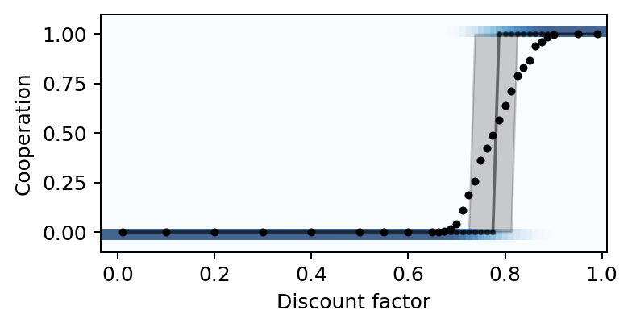
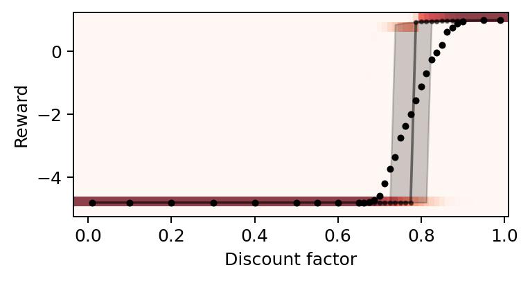
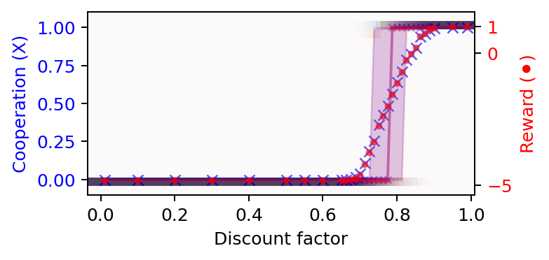
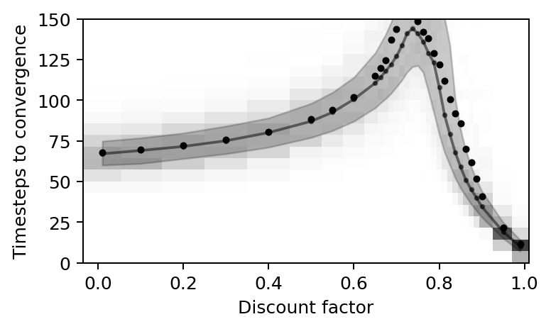

import numpy as np
import matplotlib.pyplot as plt
from pyCRLD.Environments.EcologicalPublicGood import EcologicalPublicGood as EPG
from pyCRLD.Agents.StrategyActorCritic import stratAC
import _code.SimulationScripts as sim 5 Abrupt transitions
In this section, we illustrate complex phenomena around abrupt transitions in the parameter space of CRLD. In this example, we focus on the discount factor, which indicates how much the agents care for future rewards. Abrupt transitions go by many names, such as critical transitions, regime shifts, bifurcations, or tipping elements, to name some of them.
First, we import everything we need:
Compute data
We start by computing the CRLD trajectories from 250 random initial strategies along a varying discount factor.
# Set data trajectory for storing results, e.g.,
ddir = '/Users/wolf/Downloads/CoCoIn_data'
# Initialize first environment and multi-agent environment interface (MAEi)
env = EPG(N=2, f=1.2, c=5, m=-5, qc=0.2, qr=0.01, degraded_choice=False)
MAEi = stratAC(env=env, learning_rates=0.1, discount_factors=0.99, use_prefactor=True)
# Create random initial strategies from simulation scripts 'sim'
Xs = sim.initial_strategies(MAEi, 250)
# Create discount factors to loop through
discountfacts = np.sort(np.unique(list(np.linspace(0.1, 1.0, 10)[:-1].round(2))
+ list(np.arange(0.5, 1.0, 0.05).round(2))
+ list(np.arange(0.65, 0.9, 0.0125).round(4))
+ [0.01, 0.99]))
print("Discount factors:")
print(discountfacts)Discount factors:
[0.01 0.1 0.2 0.3 0.4 0.5 0.55 0.6 0.65 0.6625
0.675 0.6875 0.7 0.7125 0.725 0.7375 0.75 0.7625 0.775 0.7875
0.8 0.8125 0.825 0.8375 0.85 0.8625 0.875 0.8875 0.9 0.95
0.99 ]# compute or load the data from disk (if they exist)
convtimes = []; rewss = []; coops = []
for dcf in discountfacts:
print(f" = = = = {dcf} = = = =")
MAEi = stratAC(env=env, learning_rates=0.1, discount_factors=dcf,
use_prefactor=False)
trjs, fprs = sim.obtain_trajectories(MAEi, Xs, 25000, ddir=ddir)
# convergence times
convtimes.append([len(trj) for trj in trjs])
# final rewards
rewss.append(sim.final_rewards(MAEi, trjs))
# cooperative acts
coops.append([trj[-1].astype(float)[:,1,0] for trj in trjs])Plotting function
Next, we create a function to plot the data along the varying parameter.
def plot_valuehistograms_vs_parameters(parameters, values, bins, rnge,
marker='.', alpha=1.0, color='black',
cmap='viridis', ax=None):
"""
Plot a histogram for each parameter next to each other.
Parameters
----------
parameters: iterable
of float-valued parameters
values: iterable
of iterable of values for each parameter
bins: int
The number of bins for the histograms
rnge: tupe
Range of the histogram as (min, max)
"""
# Figure
if ax is None:
_, ax = plt.subplots()
# Create iterable of histograms for values
valhist=[]
for conv in values:
h = np.histogram(conv, bins=bins, range=rnge)[0]
valhist.append(h)
# Adjust spacing
params = np.array(parameters)
delta = params[1:] - params[:-1]
paramedges = np.concatenate(([parameters[0]-0.5*delta[0]],
parameters[:-1] + 0.5*delta,
[parameters[-1]+0.5*delta[-1]]))
valedges = np.linspace(rnge[0], rnge[1], bins+1)
# Plot histograms with colormap
X, Y = np.meshgrid(paramedges, valedges)
ax.pcolormesh(X, Y, np.array(valhist).T, cmap=cmap, alpha=alpha*0.75)
# Plot median, quantiles and mean
quartile1, medians, quartile3 = np.percentile(values, [25, 50, 75], axis=1)
ax.fill_between(params, quartile1, quartile3, color=color, alpha=alpha*0.2)
ax.plot(params, medians, marker=marker, markersize=4, linestyle='-',
color=color, alpha=0.5*alpha)
ax.plot(params, np.mean(values, axis=1), marker=marker, linestyle='',
color=color, alpha=alpha)
# Adjust the visible y range
ax.set_ylim(rnge[0], rnge[1])Abrupt transition
We use the created plotting function (Section 5.2) to visualize the phenomenon of an abrupt transition from complete defection to complete cooperation.
We show the abrupt transition in the level of cooperation at convergence.
# Create the canves
fsf = 0.7 # figure size factor
fig, ax = plt.subplots(figsize=(fsf*6, fsf*3))
# Plot the cooperation probabilities versus the discount factors
plot_valuehistograms_vs_parameters(parameters=discountfacts,
values=np.array(coops).mean(-1), ax=ax,
bins=21, rnge=(-0.1, 1.1), cmap='Blues')
# Make labels and axis nice
plt.ylabel('Cooperation')
plt.xlabel('Discount factor')
# Save plot
plt.subplots_adjust(left=0.15, right=0.98, top=0.98, bottom=0.2)
We also show the abrupt transition in the level of final rewards obtained by the agents.
# Create the canves
fsf = 0.7 # figure size factor
fig, ax = plt.subplots(figsize=(fsf*6, fsf*3))
# Plot the reward levels versus the discount factors
plot_valuehistograms_vs_parameters(parameters=discountfacts,
values=np.array(rewss).mean(-1), ax=ax,
bins=21, rnge=(-5.25, 1.25), cmap='Reds')
# Make labels and axis nice
plt.ylabel('Reward')
plt.xlabel('Discount factor')
plt.subplots_adjust(left=0.15, right=0.98, top=0.98, bottom=0.2)
Since the transition from complete defection to complete cooperation and from low reward and high reward appear similar, we can also try to plot them together into one plot, with cooperation on the left y-axis and the reward on the right y-axis.
# Create the canves
fsf = 0.7 # figure size factor
fig, ax1 = plt.subplots(figsize=(fsf*6, fsf*2.8))
ax2 = ax1.twinx() # instantiate a second axes that shares the same x-axis
# Plot the cooperation probabilities versus the discount factors
plot_valuehistograms_vs_parameters(parameters=discountfacts,
values=np.array(coops).mean(-1), ax=ax1,
bins=21, rnge=(-0.1, 1.1), cmap='Blues',
marker='x', color='blue')
# Plot the reward levels versus the discount factors
plot_valuehistograms_vs_parameters(parameters=discountfacts,
values=np.array(rewss).mean(-1), ax=ax2,
bins=21, rnge=(-5.35, 1.55), cmap='Reds',
marker='.', alpha=0.5, color='red')
# Make labels and axis nice
ax1.set_xlabel('Discount factor')
ax1.set_ylabel('Cooperation (X)', color='Blue')
ax1.tick_params(axis='y', labelcolor='Blue')
ax2.set_ylabel('Reward (⚫️)', color='Red')
ax2.tick_params(axis='y', labelcolor='Red')
ax2.set_yticks([-5, 0, 1]);
plt.subplots_adjust(left=0.15, right=0.88, top=0.96, bottom=0.22)
plt.savefig('_figs/fig_02AbruptTransitionCooperationReward.png', dpi=150)
Critical slowing down
We use the created plotting function (Section 5.2) to visualize the phenomenon of a critical slowing down of the learning speed around the tipping point.
# Create the canves
fsf = 0.7 # figure size factor
fig, ax = plt.subplots(figsize=(fsf*6, fsf*3.5))
# Plot the convergence times versus the discount factors
plot_valuehistograms_vs_parameters(parameters=discountfacts, values=convtimes,
bins=21, rnge=(0, 150), cmap='Greys', ax=ax)
# Make labels and axis nice
plt.ylabel('Timesteps to convergence')
plt.xlabel('Discount factor')
# Save plot
plt.subplots_adjust(left=0.15, right=0.98, top=0.96, bottom=0.18)
plt.savefig('_figs/fig_02AbruptTransitionSpeed.png', dpi=150)